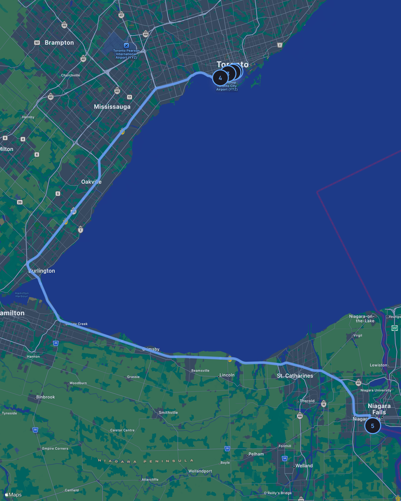

Love Park Coffee Pause
“Started by the water after coffee. The boardwalk was busy but the breeze made it feel unhurried.”
Weather: ⛅ 23°C • Partly cloudy • 10 km/h SW
Captured Moments

Journey
Waterfront Golden Hour covered 5 stops across 132.0 km, with 3h 26min of active travel. The most comfortable weather was 23°C, sunny intervals at Harbourfront Centre Boardwalk, while the least comfortable weather was 18°C, clear at Niagara Falls — Table Rock Lookout.
Friday, June 5, 2026
Stops
Each Stop keeps the memory readable: where it felt different, what the weather was doing, what mood stayed behind, and the Captured Moments that belonged to that place.
“Started by the water after coffee. The boardwalk was busy but the breeze made it feel unhurried.”
Weather: ⛅ 23°C • Partly cloudy • 10 km/h SW
Captured Moments
“Stopped near the boardwalk to watch boats move through the harbour. This is the part of the walk that made the route feel like a memory.”
Weather: ☀️ 23°C • Sunny intervals • 12 km/h SW
Captured Moments
“Added this stop manually because the garden felt different from the boardwalk: quieter, greener, and slower.”
Weather: ☀️ 22°C • Sunny intervals • 14 km/h SW
Captured Moments
“Paused above the waterfront for one last Toronto skyline view, then walked back to the car for the drive to Niagara Falls.”
Weather: ☀️ 21°C • Clear • 16 km/h SSW
Captured Moments
“Drove around Lake Ontario on the Gardiner and QEW, parked near the Falls, and walked to Table Rock. Stayed to watch the Horseshoe Falls change from evening light to colourful illumination.”
Weather: 🌤️ 18°C • Clear • 13 km/h SSW
Captured Moments
Journey Insights
23°C, sunny intervals, during the most comfortable outdoor part of the journey.
1h 47min spent here, making it the longest pause in the journey.
The Mood reflects 5 mood Stops: 😌 Love Park Coffee Pause · ✨ Harbourfront Centre Boardwalk · 🌿 Toronto Music Garden · 😊 Trillium Park Summit · 🤩 Niagara Falls — Table Rock Lookout